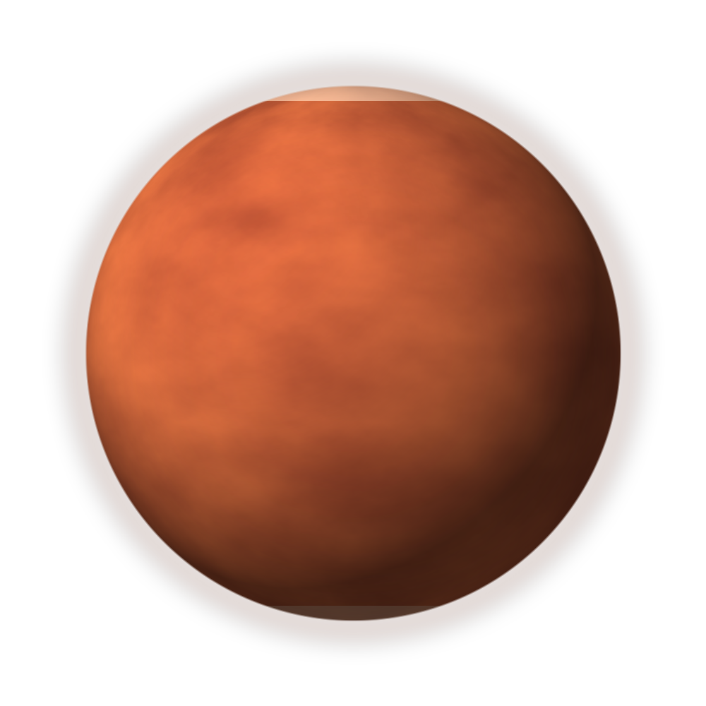

Familiar seasons
Mars tilts on its axis, so it has seasons, polar caps, and changing weather patterns.
Dedicated planet page
Mars is a cold rocky planet with rust-coloured dust, enormous volcanoes, deep valleys, polar ice, and signs that liquid water once shaped its surface.
Compare with the atlas
Science notes
Mars tilts on its axis, so it has seasons, polar caps, and changing weather patterns.
Dry river channels and minerals suggest water once moved across parts of the surface.
Orbiters, landers, and rovers can send observations back to Earth for scientists to study.
Quick check
The quiz gives feedback without moving focus or refreshing the page.